国庆 3 天珠海行的一些碎碎念
国庆去了一趟珠海，3 号晚上出发，7 号中午返回上海，加起来三天四夜。
每去到一个陌生城市，总会有一些基于个人体验的第一印象，不一定正确但绝对主观，趁着出游回来之后第一印象还在，就赶紧记录下来：
1️⃣ 环境宜人的海滨城市
温度适宜，空气清新，天空蔚蓝。
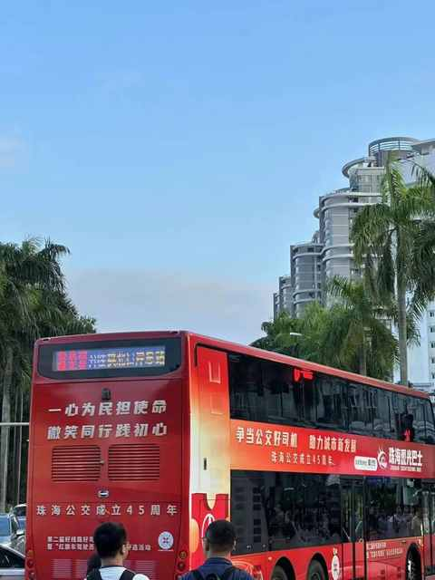
2️⃣ 非机动车道保有量偏低
似乎珠三角地区的城市的道路规划中，非机动车道的层级不高，比较少的路线才有，大多时候非机动车都是要借用右侧车道由于非机动车道的规划。
如果要经常进行跑步和骑行这两项运动，整体上就没那么友好。
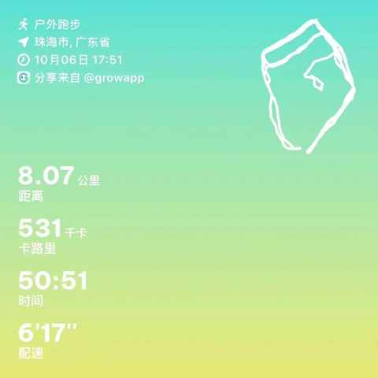
原计划是跑 10km，实在是受限于道路情况与预估的不符，最终勉强完成 8km，由于要频繁切换路线速度也提不起来。
3️⃣ 快速路免费，景点也免费
从金台寺返程到井岸镇的快速路，路过斗门镇。
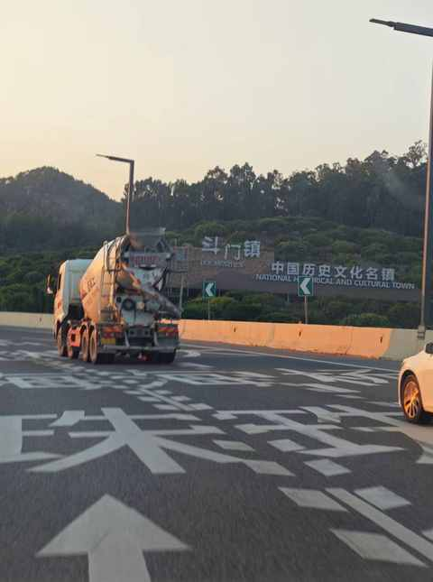
4 号和 5 号一起去到 5 个景点，都是免费。
金台寺
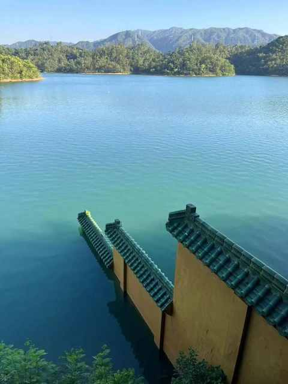
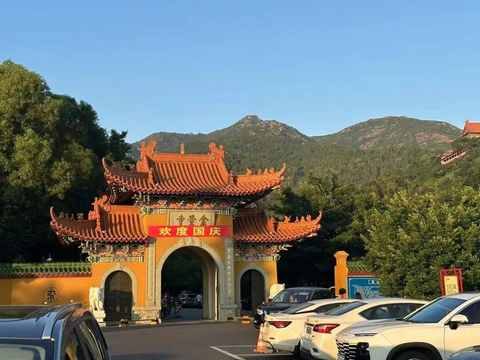
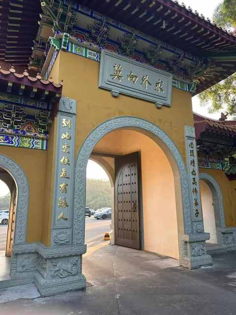
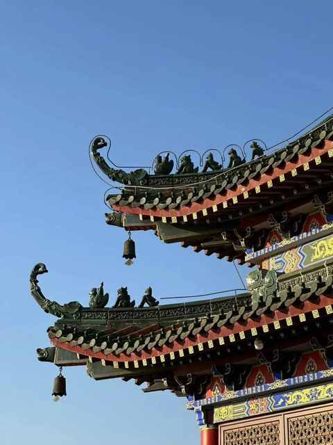
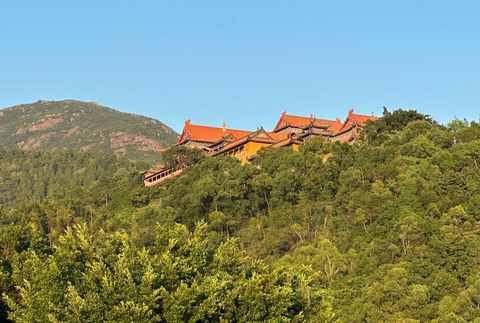
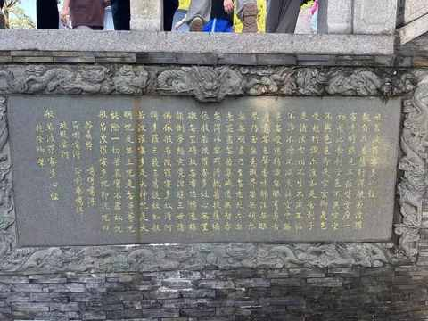
圆明新园
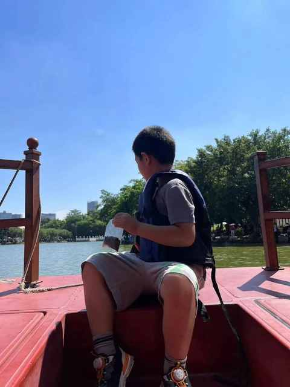
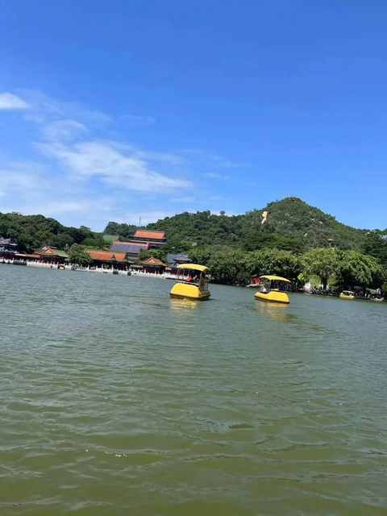
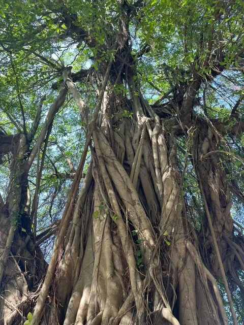
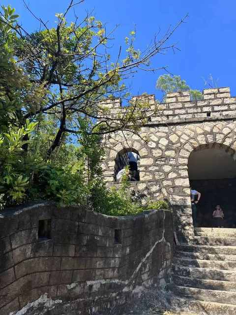
珠奥空中阳台
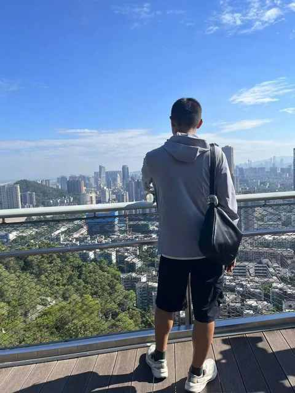
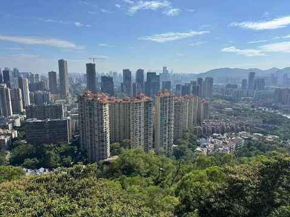
能看到澳门的几个标志性建筑
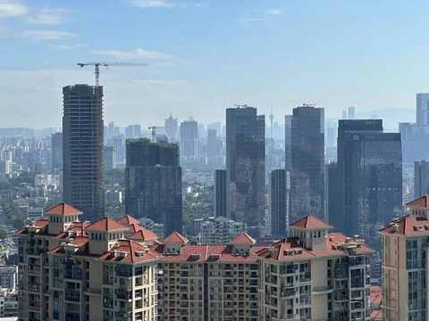
板樟山森林公园
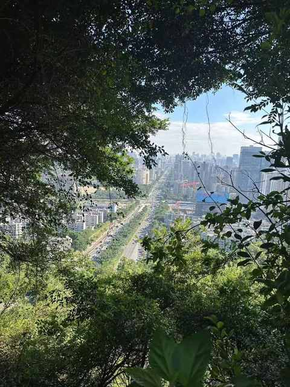
爱情邮局-海滨泳场
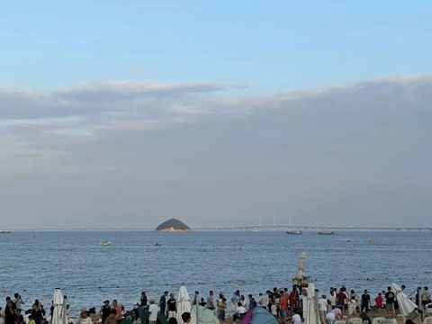
远处能看到港珠澳大桥
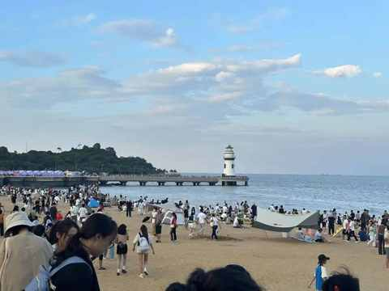
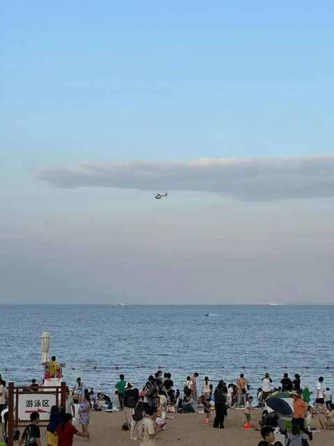
4️⃣ 靠海且山多
去到金台寺的时候，一时间以为到了大别山区，远处是连绵不绝的山峰。
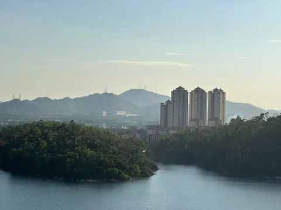
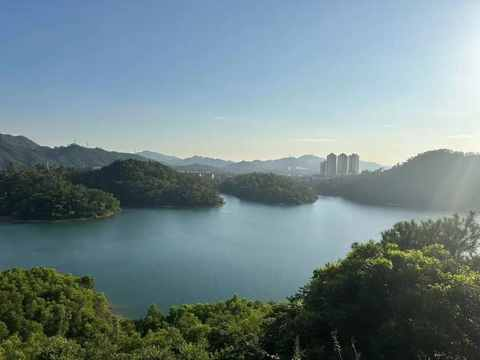
5️⃣ 外地饭馆中东北菜和湘菜偏多
从不同饭馆的数量上能大概反推在珠海可能哪几个地区的外地人比较多一些，哪些地区的外地人可能会少一些。
6️⃣ 在进一步完善中的基建
从金湾机场到斗门区的路上随处都能发现在建设的工地和新修的道路。
从斗门区到市中心一路上也能发现不少道路在拓宽，新的高架在铺设。
7️⃣ 植物茂盛且种类丰富
市中心的路边
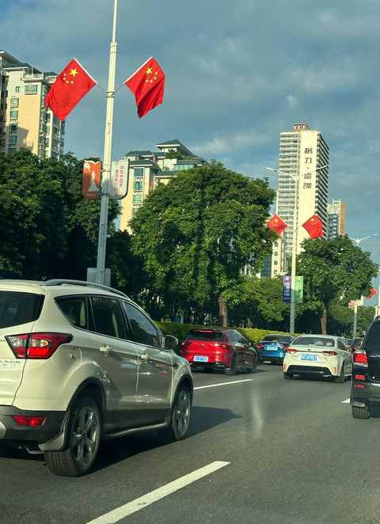
海滩边
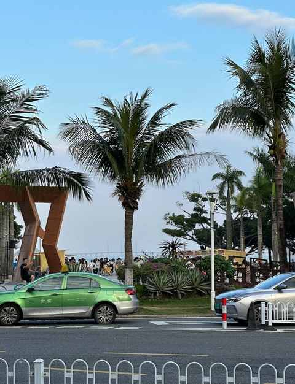
小区内景
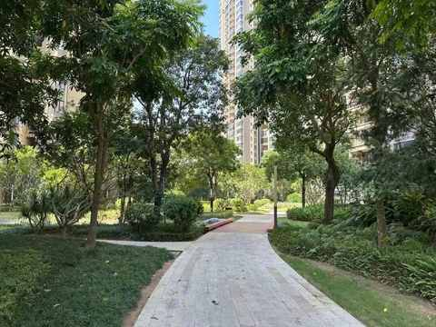
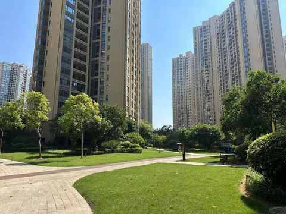
8️⃣ 未感知到物价差
总体上和一线城市类似，菜市场、早点摊、便利店、路边小馆、大排档等等地方的消费与北上广深无明显差别，只有极少的商品有物价差。